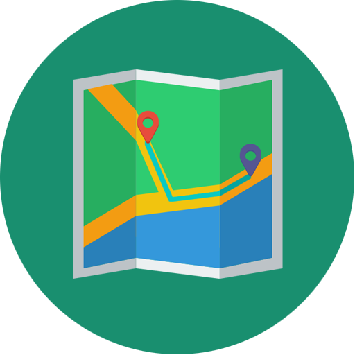

Pada zaman Kerajaan Batu Putih (yang sekarang menjadi Kecamatan Batu Putih), ada seorang kepala perang kerajaan tersebut yang tinggal menetap dipulau poteran,tepatnya disebelah utara pertigaan Kalenang yang sekarang bernama Buju’ Kapala Perang.Dipulau poteran sendiri dulu ada pintu gerbang atau gapura tepatnya sebelah barat pertigaan Kalenang (600 meter). Pintu gerbang tersebut merupakan pintu masuk sekaligus tempat pemberhentian atau tempat singgah orang-orang yang telah menempuh perjalanan jauh. Pintu gerbang itu juga merupakan tempat bertemunya orang-orang pendatang dengan masyarakat sekitarnya. Selain kisah Buju’ Kepala Perang tinggallah seorang perempuan yang dijuluki Nyi Koning dan tempatnya sekarang bernama Buju’ Koning. Nyi Koning adalah orang yang ahli tabib dan nujum, sehingga banyak orang-orang yang datang untuk meminta petuah keselamatan kepadanya. Selain itu di pulau poteran, dulu ada dua pelabuhan besar yaitu pelabuhan Ju’aji sebelah barat gapura dan pelabuhan Kalenang. Orang – orang yang mau ke pulau Poteran selalu melewati gapura tersebut dan digapura itu merupakan bertemunya orang-orang yang keluar masuk pulau Poteran, Sehingga orang-orang menyebut tempat itu dengan gapura yang kemudian tempat sekitar pintu gerbang dijadikan sebuah perkampungan atau desa yang diberi nama “GAPURANA.”
Lembaga kemasyarakatan sebagai mitra kerja pemerintah dan organisasi kemasyarakatan lainnya, yang berfungsi sebagai fasilitator, perencana, pelaksana, pengendali dan penggerak pada masing-masing jenjang pemerintahan untuk terlaksananya program PKK.
Karang Taruna merupakan wadah pengembangan generasi muda nonpartisan, yang tumbuh atas dasar kesadaran dan rasa tanggung jawab sosial dari, oleh dan untuk masyarakat khususnya generasi muda di wilayah Desa yang bergerak dibidang kesejahteraan sosial.
Kelompok tani adalah kumpulan petani/peternak/pekebun yang dibentuk atas dasar kesamaan kepentingan, kesamaan kondisi lingkungan (sosial, ekonomi, sumberdaya) dan keakraban untuk meningkatkan dan mengembangkan usaha anggota.